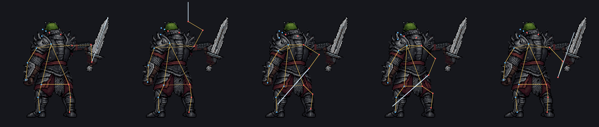
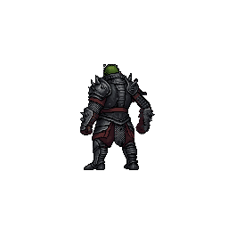
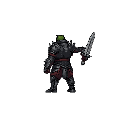

Orc principal atual, ataque de Espada, direção back_l apenas.
Cinco poses estruturais planejadas antes de qualquer desenho, convertidas uma única vez em arte
real para testar a hipótese. Nada aqui toca produção, outras direções, o machado ou o Unity.
Esqueleto COCO-18 sobreposto ao corpo real da vista back_l. Vermelho é o
lado direito do personagem, azul o esquerdo, e a linha clara é a lâmina desenhada a partir da
empunhadura com o comprimento medido da arma.

y 0,477 até 0,281 e desce até 0,539. Os tornozelos não saem
de 0,70–0,72, sempre acima do chão em 0,7422.

Funcionou: o corpo. A progressão de postura foi respeitada — a arma sobe, o tronco acompanha, o quadril participa, os pés ficam no chão. A identidade do orc (armadura escura com vivo vermelho, cabeça verde, proporção) sobreviveu à conversão, o que era o ponto mais incerto de uma abordagem guiada por esqueleto.
Falhou: a arma. Ela não é uma junta do esqueleto, então o modelo precisa redesenhá-la do zero em cada quadro — e não consegue. Medição de pixels de metal claro por quadro:
| Quadro | F00 | F01 | F02 | F03 | F04 | F05 | F06 | F07 | F08 | F09 | F10 | F11 | F12 | F13 |
|---|---|---|---|---|---|---|---|---|---|---|---|---|---|---|
| Metal claro | 68 | 71 | 50 | 15 | 1 | 3 | 3 | 5 | 6 | 5 | 5 | 5 | 3 | 44 |
A lâmina existe como aço até F02, colapsa em F03–F04 e passa o resto do golpe como uma massa cinzenta sem aresta, voltando só no último quadro. É exatamente o defeito que o criador vinha reclamando, e agora sabemos a causa mecânica: arma não sobrevive a animação guiada por esqueleto.
Separar corpo e arma. O esqueleto serve para o corpo, e isso está provado. A arma deve continuar sendo o asset independente que a fábrica já tem, posicionada por transformação rígida a partir do punho, como manda a política de armas da fábrica. Animá-la dentro da geração generativa é o caminho que este experimento descarta.
Custo total: 3 generations. Nenhuma outra chamada paga foi feita.